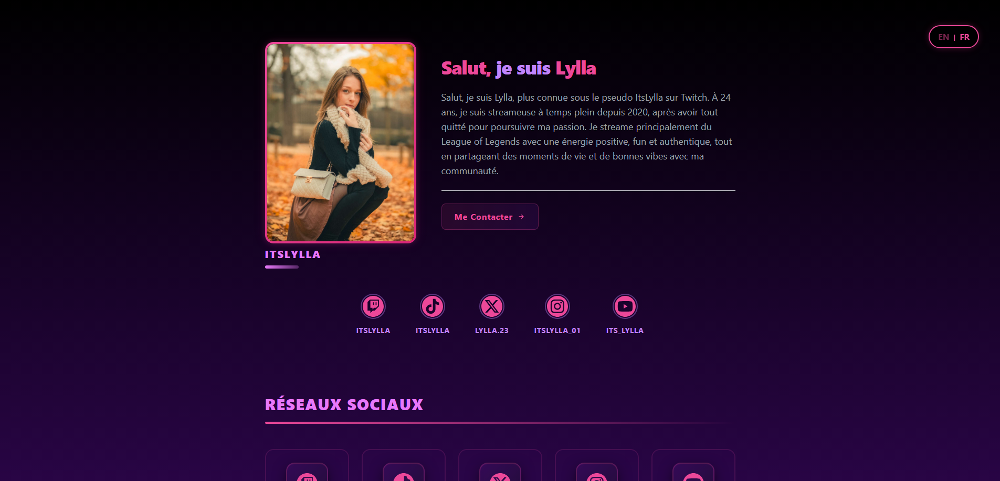

Média Kit - ItsLylla
Un média kit interactif et bilingue pour une streameuse Twitch
Ce projet consiste en la conception et le développement d'un média kit professionnel et interactif pour la streameuse ItsLylla. L'objectif était de créer une page vitrine percutante et immersive permettant de présenter sa marque, ses statistiques d'audience, son planning et ses partenariats auprès de marques ou de sponsors potentiels.
Caractéristiques principales
- Identité visuelle forte : Esthétique sombre (dark mode) avec des effets de lueur ("glow") néons violet et fuchsia en accord avec sa DA, les codes visuels du streaming et du gaming.
- Gestion bilingue dynamique : Système de traduction en temps réel (Français / Anglais) géré en JavaScript sans rechargement de page.
- Intégration sociale & Stats : Présentation claire des chiffres clés (Twitch, TikTok, X, Instagram, YouTube) et liaison vers TwitchTracker.
- Planning hebdomadaire interactif : Calendrier de diffusion clair et structuré en fonction de la langue sélectionnée.
- Expérience utilisateur soignée : Copie en un clic de l'adresse de contact avec retour visuel animé et transitions fluides.
Outils & Tech
HTML5, CSS3, JavaScript, Tailwind CSS
Rôle
Design & Développement
Type
Projet Client / Personnel